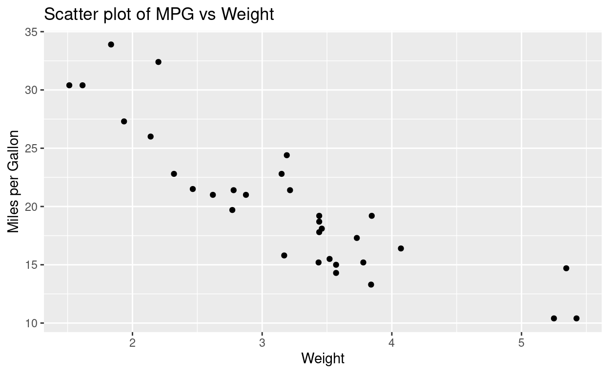
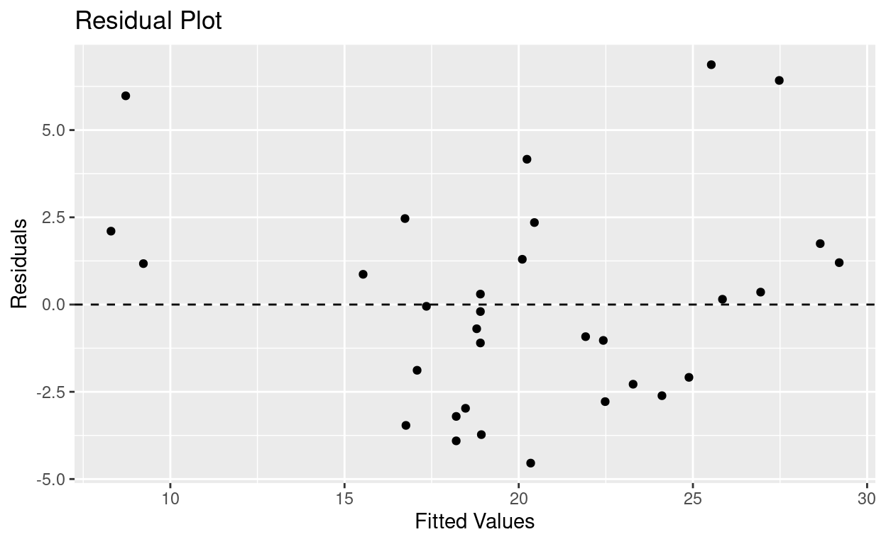

Dive into advanced data visualization techniques in R to enhance the interpretation of linear regression analysis results. Using the mtcars dataset, we explore how ggplot2 and plotly can provide deeper insights into regression models.
Data visualization is a powerful tool in statistical analysis, especially in the context of regression analysis. It helps in identifying trends, patterns, and potential issues in the data. In this post, we’ll explore various data visualization techniques using the mtcars dataset in R, demonstrating how these techniques can enhance our understanding and presentation of regression analysis results.
Before diving into regression, it’s crucial to understand the relationship between variables. Scatter plots are a great way to visualize these relationships.
library(ggplot2)
ggplot(mtcars, aes(x=wt, y=mpg)) +
geom_point() +
labs(title="Scatter plot of MPG vs Weight", x="Weight", y="Miles per Gallon")
This plot shows the relationship between the weight of the cars (wt) and their fuel efficiency (mpg).
Box plots and histograms provide insights into the distribution of variables, which is important for regression analysis.
The box plot and histogram of mpg indicate the spread and central tendency of fuel efficiency across different cars.
Visualizing the regression line alongside the data points helps in assessing the model fit.
ggplot(mtcars, aes(x=wt, y=mpg)) +
geom_point() +
geom_smooth(method="lm", se=TRUE) +
labs(title="Scatter plot with Regression Line", x="Weight", y="Miles per Gallon")This plot illustrates how well the linear model fits the data.
Enhancing plots with ggplot2 can make interpretations clearer and more intuitive.
ggplot(mtcars, aes(x=wt, y=mpg)) +
geom_point(color="blue") +
geom_smooth(method="lm", se=TRUE, color="red") +
labs(title="Enhanced Scatter plot with ggplot2", x="Weight", y="Miles per Gallon")The enhanced plot provides a clearer visualization of the regression line and data points.
Analyzing residuals is key to understanding the performance of a regression model.
model <- lm(mpg ~ wt, data=mtcars)
residuals_plot <- ggplot(model, aes(.fitted, .resid)) +
geom_point() +
geom_hline(yintercept=0, linetype="dashed") +
labs(title="Residual Plot", x="Fitted Values", y="Residuals")
residuals_plot
The residual plot helps to diagnose issues with the model, like non-linearity or heteroscedasticity.
It’s important to check if the residuals from our regression model are normally distributed. This can be done using a QQ plot.
library(ggplot2)
model <- lm(mpg ~ wt, data=mtcars)
residuals_data <- as.data.frame(qqnorm(resid(model), plot.it = FALSE))
names(residuals_data) <- c("Theoretical", "Residuals")
# Calculate the standard deviation of residuals
residuals_std <- sd(residuals_data$Residuals)
# Flag outliers - points more than 2 standard deviations from the mean
residuals_data$Outlier <- abs(residuals_data$Residuals) > 2 * residuals_std
# Creating the enhanced QQ plot
ggplot(residuals_data, aes(x = Theoretical, y = Residuals)) +
geom_point(aes(color = Outlier)) +
geom_qq_line(aes(sample = Residuals)) +
scale_color_manual(values = c("black", "red")) +
theme_minimal() +
labs(title="Enhanced QQ Plot for Residuals", x="Theoretical Quantiles", y="Sample Quantiles")Interactive plots make it easier to explore complex data and models.
library(plotly)
p <- ggplot(mtcars, aes(x=wt, y=mpg)) +
geom_point() +
geom_smooth(method="lm", se=TRUE)
ggplotly(p)With Plotly, users can interact with the plot to gain deeper insights.
Effective data visualization is crucial in regression analysis. It aids in understanding the data, diagnosing the model, and communicating results. R, with its robust packages like ggplot2 and Plotly, offers a wide array of tools for creating meaningful and insightful visualizations.